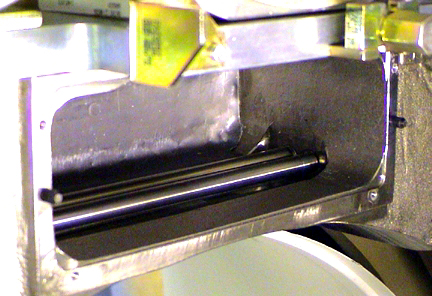

Operating Documentation
Direction 5193575-800, Rev# 5
Operating Documentation |
| ELECTROCUTION HAZARD. | |
| HIGH VOLTAGE PRESENT. | |
| use proper lockout/tagout procedures before replacing components. |
| CRUSH HAZARD | |
| UNEXPECTED GANTRY ROTATION CAN CAUSE SERIOUS INJURY. | |
| never service the gantry with the axial drive enabled. |
| Lead Hazard | |
| Direct contact with lead in the collimator can lead to personal contamination. | |
| Wear safety gloves and wash hands after handling lead. |
| Condition | Reference | Eff |
|---|---|---|
Only trained service personnel should service the GE CT scanner. | - | - |
| LEAD EXPOSURE. | |
| PERSONAL PROTECTIVE EQUIPMENT REQUIRED. | |
| follow instructions in safety chapter, equipment service-chemical & materials, before performing the following procedure. |
Remove the Gantry Covers as needed.
Perform Gantry Power Lockout/Tagout procedures.
Open three (3) Lint Free Alcohol Pads, unfold and allow to air dry.
Position the gantry with the Collimator at six-o'clock.
Remove the Collimator Control Board. See Collimator Control Board Replacement for guidance.
Remove the Collimator Filter Assembly. See Collimator Filter Replacement for guidance.
Remove Secondary Aperture and Output Window. See Illustration 3.
Loosen the six (6) end plate screws and remove the end plates (Item 1), screws and washers together.
Remove the eight (8) output window screws (Item 2) and washers.
Remove the supporting plates. (Item 4)
Remove the output window. (Item 3)
Clean off any dust and/or particles from output window or support plates with Aero Duster.
Rotate the gantry so collimator is at 12 o'clock position.
Clean collimator housing interior.
| Do not use the metal end of the vacuum hose. This can scratch the collimator cams. Use non-metallic accessories supplied with the vacuum cleaner. | |
Using the vacuum cleaner, clean the housing interior to remove any attached grease to metal particles.
Using the Aero Duster and nozzle, blow out debris from the collimator housing interior.
Rotate gantry so collimator is at 6 o’clock and repeat Step 9. This is to ensure all loose particles are removed from collimator housing chamber.
| Use care, do not scratch or bend the cams. Do not allow cams to contact each other while rotating by hand. Damage can result in tracking errors or excessive patient dose. This would require collimator replacement. | |
Use fresh, wet alcohol pads clean the collimator cams. Rotate the cams using the motor shaft on each side of the collimator.
Illustration 5: Cleaning the Collimator Cams

| Too much alcohol can dissolve glue that secures the lead lining in place. This type of damage will result in intermittent artifacts and require collimator replacement. | |
Using fresh, wet alcohol pads and swabs to clean the filters in collimator filter assembly. .
Swab Preparation
Cut swab to 6.5 cm (2.5 in) length.
Wet lint-free foam head with alcohol. Squeeze excess alcohol from head.
| Use extreme care. Do not dent or scratch the filters. Such damage will require replacement of the collimator, resulting in a complete tube change procedure. | |
Carefully insert swab into graphite filter chambers, and wipe filters clean. (Item 1 and 2 in Illustration.)
Remove the swab and inspect the filters. Repeat with clean swabs as necessary until clean.
Use alcohol pads to clean metal filters on both the patient and tube sides of the filter assembly. (Items 1-3 in Illustration.)
| Do not remove filter off of the positioning drive screw. Do not crush home switch with filter assembly. Either action will require replacement of the collimator. | |
Using the dry lint free alcohol pads, clean the Filter Positioning Drive screws. See Illustration 9.
Remove only excess grease from the drive nut and drive screws.
The position of the filters can be moved using a flat blade screwdriver and turning the drive screws motor shaft at either end of the Filter Assembly.
Purge the filter assembly with the Aero Duster to remove any fine particles still clinging to filters.
Inspect both the cams in the collimator housing and filters in the filter assembly for scratches and dents. Such damage will cause image quality issues and will require collimator replacement.
Re-assemble the collimator.
Install filter assembly using the four (4) filter assembly bolts removed earlier. Torque to 3 ± 0.3 N-m (26.5 lbf-in).
Install the secondary aperture using the fourteen (14) secondary aperture screws removed earlier. Use a small drop of Loctite 242 to secure screws. Take care not to damage the lead window.
Install the collimator control chassis using the four (4) bolts removed earlier. Torque to 3 ± 0.3 N-m (26.5 lbf-in).
Restore gantry power and perform a hardware reset.
Perform Fast Calibration.
Perform System Scanning Test.